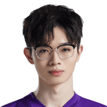
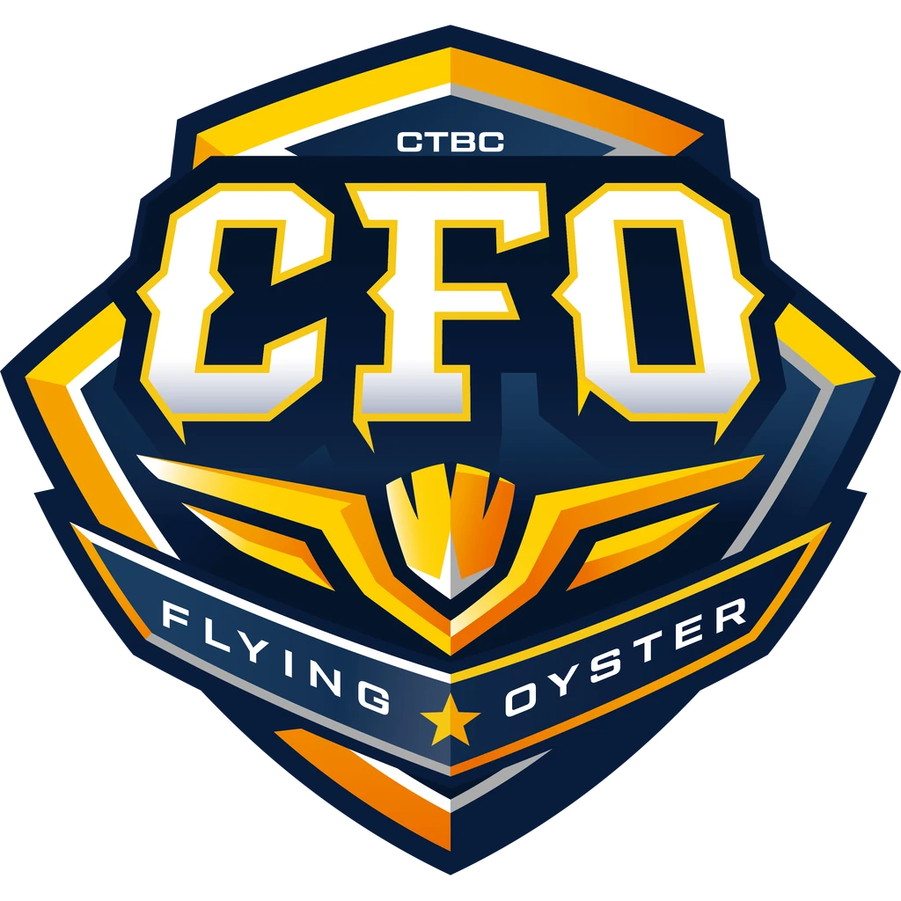

LCP · Asia-Pacific
In short
The top 15 of the 36 LCP players that are indexed with an account, measured account by account, because its players are not all on the same server. For each one the best account is published, not all of them: a professional with several has a single rank that counts. The table runs from Challenger · 2280 LP to Gran Máster · 1415 LP.
| # | Player | Team | Role | Rank | SoloQ account |
|---|---|---|---|---|---|
| 1 | Dire | TSW | Mid | Challenger · 2280 LP | gaubeo202#KR1 |
| 2 | Citrus | DFM | Jungle | Challenger · 2145 LP | JING4#eill |
| 3 |  Doggo |
CFO | Bot | Challenger · 1932 LP | hongqkule#1212 |
| 4 | Pop9 | DCG | Jungle | Challenger · 1911 LP | 문어아사랑해I#KR1 |
| 5 | ShiauC | DCG | Support | Challenger · 1883 LP | Last Sumnner#KR1 |
| 6 | Pun | TSW | Top | Gran Máster · 1779 LP | hacker troller#2907 |
| 7 | Chika | MVK | Mid | Gran Máster · 1749 LP | dlwirma#이지금 |
| 8 | SanSan | MVK | Jungle | Gran Máster · 1683 LP | Im noob777#777 |
| 9 | Fisher | DFM | Coach | Gran Máster · 1613 LP | 동구리미드#피노키오 |
| 10 | Gury | MVK | Jungle | Gran Máster · 1598 LP | guz1vjppr0kut3#2810 |
| 11 | 1Jiang | GZ | Top | Gran Máster · 1580 LP | 1Jiang#2003 |
| 12 | Taki (VN) | GAM | Gran Máster · 1555 LP | t4k1zz#KR2 | |
| 13 | Eddie | TSW | Bot | Gran Máster · 1553 LP | edhdcntsw#KR11 |
| 14 | Feng | DCG | Bot | Gran Máster · 1456 LP | wanan theworld#xdbx1 |
| 15 | Woody | DFM | Support | Gran Máster · 1415 LP | Nuyoah9#KR2 |
The 8 most played champions in the recent match history of LCP players. Alistar leads with 58 games and 62 % wins. The DPM is weighted by games, it is not an average of averages.
| Champion | Games | Wins | Average DPM | Players | Plays it most |
|---|---|---|---|---|---|
| Alistar | 58 | 62 % | 68 | 6 | ShiauC |
| Jayce | 45 | 67 % | 80 | 6 | 1Jiang |
| Lulu | 45 | 38 % | 61 | 7 | ShiauC |
| Bard | 38 | 53 % | 71 | 8 | ShiauC |
| LeeSin | 37 | 46 % | 64 | 11 | Husha |
| Anivia | 30 | 50 % | 66 | 3 | 1Jiang |
| Ambessa | 29 | 38 % | 71 | 5 | 1Jiang |
| Ezreal | 29 | 41 % | 57 | 10 | Doggo |

CFO CTBC Flying Oyster4 playersDire (TSW, Mid), at Challenger · 2280 LP. It is the highest of the 36 LCP players that LoLProTrackr has indexed.
38 players across 8 teams, with about 131 SoloQ accounts between them: an average of 3.4 accounts per player. It comes from counting the LCP leaderboard, not from an estimate.
Yes. LoLProTrackr posts to your Discord channel with the champion, the role, the rank and the team of the LCP player as soon as the game starts, without you having to ask for anything.
CTBC Flying Oyster (CFO), Deep Cross Gaming (DCG), DetonatioN FocusMe (DFM), GAM Esports (GAM), Ground Zero Gaming (GZ), MVK Esports (MVK), Fukuoka SoftBank HAWKS gaming (SHG), Team Secret Whales (TSW).
Several: the LCP (Asia-Pacific) brings together players from different regions, so the server is resolved account by account instead of assuming one for the whole league. That is why a player in this league can show the rank of one server and play on another.
LoLProTrackr posts this alert to your Discord channel —or your DMs— the moment a player enters a game, across the 20 leagues in the catalogue. Free.
The free plan follows one league; up to 4 on the paid ones, which is the real ceiling set by Riot's request quota.